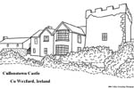
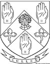

Click here to go to the Daily Log for the latest info! | |||
|---|---|---|---|
|
Back to the Homepage April 18: Added a few more documents to the Cullen Will Transcriptions page. Look for Katherine Cullen's Administration of 1705 and also William Taylor's Will of 1674. There's also a will for John Cullen, Farmer of Upton, from 1805, Thomas Cullen, Yeoman of Upton, from 1773, and Richard Cullen, Victualler of Norwell, from 1725. In the Records Archive there is also a page concerning Collie's Charity of Upton that had members of the Cullen family as trustees as far back as the 16'th and 17'th centuries. Collie's Charity exists in Upton to this day. April 15: I've done a very careful analysis of the Will of Richaard Cullen from 1580 and there are two more children for Richard that we had not previously been aware of. We've also pushed one more generation back from Richard Cullen in Upton. Richard's father, name unknown, was also buried in Upton Churchyard. April 14: I've made some updates and clarifications to the Will of Thomas Cullen (1715) and added the Will of John Archer (1712). John Archer had a daughter Susanna that married into the Cullen family in Upton in 1697. There are Cullen family members mentioned in the will so I thought it would definitely be worth posting. April 12: You may have noticed a few changes to the site recently. Slowly but surely my son Brandon is reshaping the Cullen Genealogy Homepage and he will eventually become the owner. There is a new Contact Page now which is something Brandon opted to add to make it easier to reach either of us via email. For now we're concentrating on getting the site up to modern standards and I also want to get the will transcriptions online. You will find them in the Records Archive on the Will Transcriptions page. The first wills I want to get posted are of course the earlier Cullens of Upton, Nottinghamshire. You may want to check out the Will of Richard Cullen 1579/80 since there are a couple surprises in that one! We may have pushed back the Cullen family's presence in Upton by one more generation at least! Besides Richard Cullen Husbandman of Upton d.1580, we also have: Susanna Cullen of Upton d.1652, John Cullen Yeoman of Upton d.1696, Gervase Cullen Yeoman of Upton d.1708, Thomas Cullen Yeoman of Upton d.1715, and Gervase Cullen Yeoman of Upton d.1722. Sunday April 5, 2026: The Cullen Genealogy Homepage is finally back online with GitHub! Cullen Genealogy Homepage. Please have patience while many little issues with legacy HTML are corrected throughout the site. My son Brandon, who will one day run the Cullen Genealogy Homepage on his own, has taken the lead in this regard. Ideally the site will be upgraded to modern standards with stylesheets. Sep 18: Additional updates to analysis of recent Haplogroup I Cullen DNA results. Additional information on the I1b2* Lichtenstein Cave DNA analysis. Sep 15: Finished Brendan Cullen's updates to his pages on the Descendants of William Joseph & Sarah (O'Toole) Cullen, and his second page, on the Relatives of William Cullen (1857-1949) Sep 8: I notice from the last FTP session that the Cullen Genealogy Homepage website has just exceeded 5 megabytes of webpages, images, and data! Actual html file count is just under 200 pages. In another year, the Summer of 2008, we'll reach the Ten-Year Anniversary of the website - I never thought my family pages would become so large or last so long. I'd better start making out a list now - I have a lot of people to thank! Sep 8: Finished an update on the Cullens of Upton DNA page. Read how 3,000 year old remains in Lichtenstein Cave, Germany are identified as I1b2*-B . . . old relatives of ours! Posted a page in progress in the Mathematics section on the Sums of Powers of the Natural Numbers. Sep 5: Brendan Cullen has sent along some updates to his pages on the Descendants of William Joseph & Sarah (O'Toole) Cullen. He has also updated his second page, tables of information on the Relatives of William Cullen (1857-1949). Sep 1: Beginning site updates again after a rough start. I've begun with new DNA results for the Cullens of Upton, Nottinghamshire, resulting in a rare marker combination that pinpoints Cullens descended from the family in Upton, Nottinghamshire. Beginnings of a page of Variance Distribution in STR haplotypes. I have several page updates in the works, GEDCOM material ( Hi David! ), family histories ( Hi Brendan! ), and much more. Mar 10: I've finished upgrading to a new computer system. All files and programs have been ( finally ) transferred to the new system. For those interested, the old system was a P166MHz MMX laptop running Win98 SE with 64MB RAM. The new system is a P4 1.6GHz desktop running WinXP with 512MB RAM. Updates will resume shortly. Dec 6: Posted a new page of Related English Cullen Families. Thank You to Lorraine Cullin who has forwarded information on a branch of Cullens in Dry Doddington, Lincolnshire. These families are related to those in Great Gonerby and Brant Broughton in Lincs., and descended from the Cullens of Upton, Notts. Nov 25: Posted the beginnings of a new set of data in the Records Archive. These new pages will take some time to collate and post but I will post them in progress - see the page Cullen Families of Nottinghamshire. Also made another update to the Daily Log. Nov 22: Posted some new photos on the page for the village of Upton, Nottinghamshire. Bill Coldham, of Oxfordshire UK, has also added captions and stories for the photos. His efforts have helped to bring our Upton page to life. This is a blessing for visitors who stop by to learn more about the little village in the English Midlands that was home to the Cullen family for many centuries. Nov 12: Posted new Cullen DNA results for new members. Their details are on the Haplogroup R1b DNA page. Sep 24: Posted corrected DNA results for our three newest members. See their R1b results on the Cullen R1b page. Sep 22: Posted new results to Cullen Family DNA. Three new sets of results, all of which are varieties of haplogroup "R1b". Sep 15: Posted page Special Sums of Generalized Fibonacci Sequences in the Mathematics section. Sep 4: I have had practically no time available in the last month or two for site work so there have been no updates at present. I know also there's a ton of email waiting to be answered and I apoligize for the long delay but it will be taken care of in the next week or so if all goes well. Jul 4: Added a page to the DNA section of the site for the explanation of ASD calculations as applied to the age estimation of haplotype populations per Ken Nordtvedt's conventions. Jun 22: Added a page for the Cullen DNA Results so far at the Cullen Family DNA Project. The big surprise is that two of our Cullens are the first to be included into a new R1b subclade that I uncovered while trying to match their results. The new variety, the fourth discovered to be rooted in Ireland, is called R1b-Ir/Cont. Jun 11: Added a new page off the Cullen DNA Page. The Search Results Page is a temporary home for DNA match search results. May 28: Opened a new section. We now have a Cullen DNA Page with some of the details of the genetic fingerprint of the Cullens of Upton, Nottinghamshire. Apr 16: Posted an article on Charles Cullen, Survivor of RMS Titanic Disaster, posted in the Records Archive. Mar 31: Posted more results for the Cullen Test on the DNA & Family Traits page. See also Daily Log. Mar 6,7: Initial results of the Cullen Test are posted on the DNA & Family Traits page. Posted further results that have come in. Mar 5: Finally posted the DNA & Family Traits page. The Cullen Test is up also and I encourage you to try it out - the discussion so far has been extraordinary on the Cullen List via Rootsweb! Feb 13: See the Daily Log for more information on a proposed DNA test for our Cullen genealogy. This test would provide information on the ancient origins of our line of male ancestors, the earliest known members of which are the Cullens of Upton, Nottinghamshire. Feb 5: Posted the draft version of the Kid's Corner. It still needs some work and of course more content but it's up and running. Jan 29: Another image to be printed out and colored by the kids in your family. St Peter & St Paul's parish church in Upton, Nottinghamshire. This was the community hub of life for my Cullen ancestors since the middle to late 1500's and I wouldn't be surprised if descendants still attend services there today! Click thumbnail for full image:  Jan 29: I have several projects in progress at the same time so recent site updates will be updated further as I fill in the extra information. Jan 28: Added finally several images forwarded by Dorothy Dowgray, a member of the Cullen Family of New Zealand. Her travels in England to further our understanding of our Cullen ancestry resulted in many interesting photographs and new details in the genealogies of the Cullen family and their relatives in the English Midlands. See Cullens of Eastwood for a recent photo of the B&T Cullen Grocery. Also, in Upton, Nottinghamshire, there have been added three absolutely beautiful views of St Peter & St Paul's Church. Jan 16: Another coloring page for the kids. This one is of Cullenstown Castle in Cullenstown, Co Wexford, Ireland. Click on the thumbnail image below to get the full image which can then be printed out for your little artists to color in:  Jan 16: Uploaded a completely rewritten and edited Graphics Giftshop. All content is now on one page due to memory considerations. Enjoy! Dec 30: Posted a page for the descendants of Thomas & Margaret (Murphy) Cullen of Ballyconnigar, Co Wexford, located in the Records Archive. Many thanks to Ron & Josephine Lowe. Dec 29: Something for the kids from the 'Kid's Corner', an upcoming section of the site. Click on the thumbnail image below to get the full image which can then be printed out for the wee ones to color in!  |
Go to the Posting Pages Sep 23: Sep23: One post for Co Wexford regarding Johanna Carroll of Wexford Town. Possible relative of the Cullen family due to similarity in used family names. Sep 3: An absolutely shameful backlog of postings: one for Co Antrim, three for Co Leitrim, two for England, three for Co Roscommon, one for Co Mayo, one for Co Limerick, one for Co Cavan, one for Co Donegal, one for Co Sligo, two for Co Unknown, and one for Co Wexford. Nov 24: One post for Co Donegal. Nov 5: One post for Scotland. Oct 14: One post each for Scotland, Co Sligo, Co Wexford, Co Derry, Co Carlow, and Co Wicklow. Sep 21: One post each for Co Longford, Co Meath, and Co Donegal. Aug 6: One post for Co Limerick. May 28: One post for England, and one post for Scotland. Apr 25: One post for Co Wicklow. Mar 14: One post for Co Tyrone. Mar 11: One post for Co Sligo. Mar 7: One post for Scotland for a family that wrote me from South Africa. Names in the family are Robert Browning Cullen and Archibald Cullen. Feb 14: Two more postings: one for Co Tipperary and one for Co Sligo. Feb 8: Made two posts; one for Co Dublin and one updated post for Co Cork. Dec 28: Made many backlogged postings: Co Cavan, two posts for Co Cork, Co Donegal, Co Dublin, England, two posts for Co Galway, Co Kilkenny, four posts for Co Leitrim, Co Meath, Scotland, two posts for Co Sligo, Co Wexford, and two posts for Co Wicklow. Jan 26: One post for Co Dublin. Alexandra Cullen (1875-1959) m Agnes McDonnell (1880-1956) and had a daughter Lena Cullen (1889-1939) who m Paddy Harris (1895-1972). Jan 19: Three more postings: Scotland, Co Leitrim, and Kildare. Jan 17, 2005: Many backlogged postings have been uploaded to the site; too many in fact to summarize here other than to mention to County to which they were posted: Co Meath, Scotland, Co Roscommon, Co Unknown, Co Wexford, Co Leitrim, Co Mayo, Co Clare, Co Derry, Co Wicklow, Co Fermanagh, Co Tipperary, England, and Co Cork. The posts in Co's Clare and Derry are first-time posts for those counties so that is interesting. Oct 15: Backlogged postings. Three postings for Co Wexford, two posts for Co Dublin, and one post each for Co Unknown, England, and Scotland. Aug 14: See the Co Leitrim posting page for information on Lazarus Cullen who was born Oct 1815 in Glenfarne. He married in Ireland in 1840 to Bridget Gallagher before emigrating to New York in about 1850. Aug 13: See the posting on the page for Co Leitrim for more information on the Cullen family that may lead to a connection to the author Sir Arthur Conan Doyle. Very interesting! Jul 19: Made additional backlogged postings: One posting for Co Fermanagh; and one posting for Co Wexford. Jul 19: Made the following backlogged postings: One posting for Co Donegal; two posts for Co Dublin; one post for England; one post for Co Leitrim; one post for Co Limerick; one post for Scotland; three posts for Unknown Co in Ireland; one post for Co Wexford; and one post for Co Wicklow. Mar 10: Further backlogged queries. See posting pages for: Co Unknown, Ireland, Leitrim, Scotland, Cavan, Mayo, and Galway. Mar 5: I've just updated the posting pages with backlogged queries. More to come. See posting pages for: England, Co Tipperary, Co Cavan, Co Leitrim, and Co Wicklow. Oct 28: A request for more information concerning the connection between the Cullen and Wemys families in Dublin, Ireland. - See Co Dublin Oct 28: Reply to a message concerning a Cullen family from Cumbria, Scotland that settled in Preston, England. - See England Oct 14: Walter John Cullen married Charlotte Rogers about 1907 in mile End, London. - See England Oct 14: James Cullen and Mary Ellen Cullen (ms Cullen) were married on August 27th 1908 in Glendale - moved to Glasgow Scotland. - See Co Leitrim Oct 14: These Cullens were well known horsetrainers, Rosslare stud on the Curragh. The family crest is a pelican gluming and the motto is "we live and die for those we love". Francis Richard Cullen was killed steeplechasing in 1920 in England. - See Co Roscommon Oct 14: Thomas Sinnott Cullin (1837-1913) lived Atchison County Missouri. Parents were Edward Cullin and Catherine Sinott of Co Wexford. - See Co Wexford Oct 14: Edward Cullen (son of Owen) arrived in US ~1850's and m Margaret Sherman. Edward was a railroad man, died in 1901 Detroit, Michigan. - See Co Meath Oct 14: Maggy (Cullen) Forkin m in 1920's Rhode Island. Was daughter of Michael and Maria Cullen who were age 49 and 36 as listed in the 1901 census. Parish of Killanummery. - See Co Leitrim Oct 14: George William Cullin of Co Wexford. - See Co Wexford Oct 14: Dominick Cullen of Ballinlough, County Roscommon. Had three sons: John (my father, 1907-1981), Joseph (Josie) and Michael. - See Co Roscommon Jul 17: John Francis Cullen who was born in Glenfarne circa. 1898. His father was Charlie Cullen, who went to America for a time before returning to Ireland. He married the daughter of an R.I.C. Sargent from Manorhamilton and they settled in Longford where they had a drapery shop. - See Co Leitrim | ||
| The official logo of the Cullen Genealogy Homepage is copyrighted and all rights are reserved. However you may freely use the graphic image as a link to the homepage of this site, https://jcullen88.github.io/CullenGenealogyHomepage/ as long as I am notified of its intended use. You may also use the logo for other purposes, on a case by case basis, with the only requirement being that you simply ask for permission first. | |||
| Click here or use your Back Button to go to the Homepage | |||
{kind=link}
{kind=link}